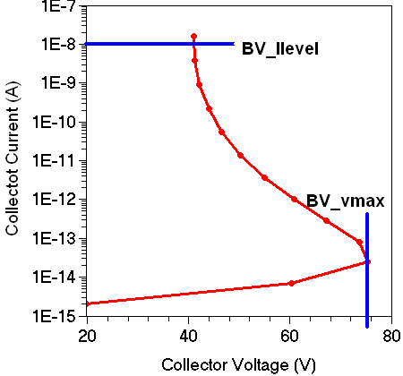

main menu
| module menu
| << previous section
| next section >>
main menu
| module menu
| << previous section
| next section >>
Tool Command Language
4. Examples
4.1 Sentaurus Visual: Extracting Breakdown Voltage
4.2 Sentaurus Process: Extracting Oxide Thickness
Objectives
- To present Tcl examples that are specific to TCAD Sentaurus.
4.1 Sentaurus Visual: Extracting Breakdown Voltage
This example shows how Tcl commands and Sentaurus Visual commands are mixed in a Sentaurus Visual input flow to extract the open-base breakdown voltages from a bipolar transistor simulation result. The example is in the Applications_Library/GettingStarted/tcl/bv_extract directory.
Different breakdown voltages are extracted:
- BV_vmax is defined as the maximum collector voltage achieved during the sweep.
- BV_Ilevel is defined as the collector voltage at which the collector current exceeds a certain value.
If the Sentaurus Visual tool node does not have a "done" status, that is, it is not yellow, first run the node to produce the results. Then, click the Run Selected Visualizer Nodes Together toolbar button to create the plot.

Figure 1. Schematics of the extraction of the BJT breakdown voltage.
Click to view the command file BV_SV_vis.tcl.
The file consists of two sections, which are executed depending on whether Run Selected Visualizer Nodes Together is active. The mode is determined by checking whether the Tcl variable runVisualizerNodesTogether is defined, by using:
if {![info exists runVisualizerNodesTogether]} {
The first block of the if statement is evaluated when runVisualizerNodesTogether is not defined, that is, when the tool is executed in batch mode.
First, the extraction libraries are loaded, which contain functions for many commonly formed extraction jobs. Second, the .plt file is loaded.
load_library extract load_file $fname -name PLT($N)
Then, the actual breakdown voltage extraction steps are performed by using the extraction procedures ext::ExtractBVv and ext::ExtractBVi. These procedures send the extracted values automatically to the Sentaurus Workbench table.
ext::ExtractBVv -out BV_vmax -name out -v $Vcs -i $Ics -sign +1 -f %.2f ext::ExtractBVi -out BV_Ilevel -name out -v $Vcs -i $Ics -io $Ilevel -f %.2f
The second block of the if statement is evaluated only when the tool is called with Run Selected Visualizer Nodes Together. In this case, no extraction is performed, but the curve of the collector current versus the collector voltage is plotted.
For this purpose, first an empty 1D plot is created and the parameters for this plot, such as axes and legend, are adjusted.
create_plot -1d -name Plot_1D
select_plots Plot_1D
set_plot_prop -hide_title -show_legend
set_axis_prop -title_font_size 24 -scale_font_size 20
set_axis_prop -axis x -title "Collector Voltage (V)" -type linear \
-scale_format fixed -manual_precision -scale_precision 0
set_axis_prop -axis y -title "Collector Current (A)" -type log \
-min 1e-15 -min_fixed -max $Ilevel -max_fixed
set_legend_prop -label_font_size 16 -label_font_att bold
Then, the actual curve plotting is performed:
create_curve -name IcVc($N) -dataset PLT($N) \
-axisX "Collector InnerVoltage" -axisY "Collector TotalCurrent"
set_curve_prop IcVc($N) -label "IcVc(n$N) $legend" \
-color $color -line_style solid -line_width 3 -show_markers
As a result, the Sentaurus Visual node returns the extracted values from "DOE:" output:
DOE: BV_vmax 75.36 DOE: BV_Ilevel 41.06
4.2 Sentaurus Process: Extracting Oxide Thickness
This example demonstrates the use of Tcl scripting within a Sentaurus Process command file. Find the example in Applications_Library/GettingStarted/tcl/tox_extract.
Click to view the primary file sprocess_fps.cmd.
After some simulation commands specific to Sentaurus Process, the Sentaurus Process Tcl function layers is used to extract information about the generated layers as a list. Each layer entry is a list containing the top and bottom coordinates, an integral value of the current dataset (not of interest here), and the material:
set LAYERS [layers]
puts "$LAYERS"
#->{ Top Bottom Integral \
Material }
#->{ -1.584176604347e-02 1.126859234306e-02 6.391490417248e+09 Oxide }
#->{ 1.126859234306e-02 5.000000000000e-01 4.360844257716e+10 Silicon }
To extract the oxide thickness, the LAYERS table is reduced to a simple flat list, consisting of the first column, that is the top coordinates, only:
set FirstColumn [list]
foreach Row $LAYERS {
lappend FirstColumn [lindex $Row 0]
}
Next, you determine the oxide thickness by subtracting the top coordinates of the first layer and the second layer. The result is printed to the log file as DOE: output, such that Sentaurus Workbench can extract it from the output and add it to the result table:
set Tox [expr [lindex $FirstColumn 2] - [lindex $FirstColumn 1]]
puts "The thickness of the grown oxide is \
[format %.2f [expr 1e3*$Tox]] nm"
#-> The thickness of the grown oxide is 27.20 nm
puts "DOE: Tox $Tox"
Run Sentaurus Process with the command-line option -n to suppress syntax-checking when using Tcl expressions, which use information only available at runtime.
main menu | module menu | << previous section | next section >>
Copyright © 2022 Synopsys, Inc. All rights reserved.